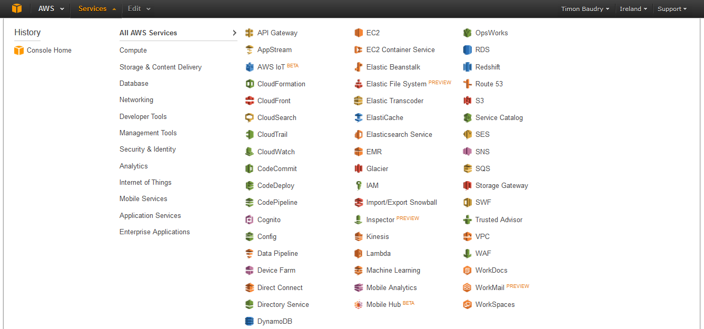

Week 20-21
Feb 29th - Mar 13th
So another two weeks have gone by and alas not a super amount of progress being made. Running into a bit of a quagmire of issues
with the personal list and the db. Gonna have to shake things up to fix that. But no biggie. Android app is somewhere, also not a huge amount
of progress made mostly due to other things needing doing. But I'll manage I'm sure. Easter break for the next two weeks so I hope, really really hope,
I can get more work done on the UI and finish as much as is possible with the website side of things. Also the report is gonna be started for sure.
There's a template thing up on moodle which I'll be using I guess. Slow progress is diheartening for sure, I just gotta get back into the swing of things.
Week 19
Feb 22nd - Feb 28th
Spent a lot of time this week doing more work with Android studios. Did some tutorials and all that, getting the hang of it.
Plan on starting the app proper next week. Also the report is getting a looking over. There are two example on moodle so I've glanced
over them to get a rough idea on what's going on. Aside from this not much to report. The other stuff is ticking on over and some
static pages have been made, yay.
Week 18
Feb 15th - Feb 21st
Slow progress so far. Mostly because other things are cropping up and getting in the way. Got a skeleton of a registration system
going along with the personal list. Looked further into the thing Paul mentioned at the interim presentations but it doesn't seem entierly
worth it. Still more research needed, as always. Other than that it's just db tweak and some new UI stuff. Also started looking into the mobile thing.
Downloaded android studios and began to mess around with it, trying to get a feel of how it works. Not as slick as Xamarin but that's to be expected really.
Shouldn't be too hard to get an app up and going with it.
Week 16-17
Feb 1st - Feb 14th
So a two week blog post this time basically because one week was taken up by the presentations so not a whole lot happened that was
worth talking about. The presentations themselves went as well as I could have hoped, no major holes were poked into the project idea.
Paul came up with the idea of having some for of automation with the whole adding API thing so I need to look into that still. Aside from
that work has begun on being able to register and log in users and all that. Which also means getting closer to having a personal list. Small
changes are going to have to be made to the db to accomidate but shouldn't be anything serious. Also started planning for the mobile app and the report
which needs to be done at some point. Probably gonna try and get it started around easter break.
Week 15
Jan 25th - Jan 31th
So it's been a while since my last blog post which was before the x-mas break. Also the x-mas exams are all finished so work on the project
has begun again in ernist. So first to fill you in on whats been going on over the break. Obviously not everything I planned got done but a fair amount
did. The UI of the global list is coming along nicely and a few changes still need to be made for the interim presentations which are on their way soon.
As well as this ironed out the last few bits and pieces from the pinging side of things, nothing really major, just cleaned it up. Looking back into AWS
once more to see if I'll be able to get anything up there for the presentations but aside from the db the chances of that are slim. So in the coming week
it's basically just gonna be preparing for the presentations. Prepare prepare and preapre again. Cleaning up the UI. Making sure no errors will crop up.
All that good stuff. I don't want to try doing anything new for fear of breaking anything.
Week 14
Dec 7th - Dec 13th
Alright, made headway on the pinging business and the service. Turns out the timer I was using isn't ideal for anything really,
changed it to a better one that doesn't break the world. Also I moved where I was doing the updates to the db to have them in a more
centralized place in the service since they were a little scattered before. In short the service is working and that makes me happy. Now
to start working on the UI. I plan to get a bunch of stuff done over x-mas, although that's perhas optimistic, and by the presentations
I should have something presentable.
Week 13
Nov 30th - Dec 6th
More work done on both the service and pinging 'n stuff and also finally got something up onto aws. Starting with aws, pushed my
db up onto aws to see if it would work. Getting it up ain't so bad, although the connection to it is kinda a bit of a bugger. But still,
for the most part it works and does what I need it to so I'm happy enough. Probably wont be touching it much until I have more stuff to get
up there. Now for the service, that's been interesting. I was planning on using an apache library for testing the api's but it was too much
work for not enough gain compared to java.net which is a whole lot easier and does mostly what I want. Even so pinging hasn't been easy since
things working to a timer seem to be not working 100%. Not entierly sure what's up yet, more work needs to be done to try and figure out
what I need to do to get it working. Once I've got that done then I can get to work on the UI, but first things first, get pinging working.
Week 12
Nov 23rd - Nov 29th
This week did a lot of work on the web service side of things. Took a little more fiddling than I feel it should have
and I'm still not 100% percent certain I have it right but it works and that's good. Basically I have a timer running
in the background that will, every hour, get all the api's that need to be checked and check 'em. Well I haven't implemented
the checking part yet but that should be straight forward.
Did a little bit more reasearch into aws, seems that is the way to go (despite the terrible ui) but didn't get as much done with
it as I would have liked. This is mostly because I had my birthday this week, so yay for me. Aside from that everything is still
on schedule and I would hope by next week to have everything working-ish and maybe have something actually up on aws.
Week 11
Nov 16th - Nov 22nd
Continuing where I left of last week I've done more reasearch into the whole hosting issue, namely Azure not playing
well with my h2 db. Started looking into alternative hosting options such as Amazon Web Service and Digital Ocean. AWS doesn't
seem bad and I get a lot of it for free because I'm a student and the I get some more for free because of github and their
student pack. Same goes for Digital Ocean but they're a lot more basic in what they offer. Unfortunatly while AWS might be able
to offer what I want they have a pretty poor UI, to say the least. I've added a picture below because it's worth looking at it.
Besides that I'll look further into which one better suits my needs, or if I should stick with Azure.
Aside from this I'm also looking into services and how I'm going to make one for my project. Doing some research and it doesn't
seem so bad at all. Probably going to go the way of making a web service, it should fit into my project more easily and I'm more
confident in my abilities in regards to web services. For next week I should have a decent stab at getting it set up as well as more
doing more host research.

Week 10
Nov 09th - Nov 15th
So a fair lot of stuff to get through this week. Most important of which was to changh the db and models from the placeholder
stuff I was using to something more relevant. Wasn't difficult, just a little time consuming. In short I got rid of the contact
table and instead there is now a Person table, an API table, a PersonalAPI table and an URL table. They're not fully finished
since I don't know for sure what all the colums I'll need will be but I'll figure that out as I go. Similarly I gave each table a
model and an interface for the basic crud operations. As well as all this I got my Azure key and so was fiddling around on there
for a while just to get used to it. It mostly seems fine, the only problem is it doesn't play well with h2. There are workarounds
but it's not ideal. More research needed.
Week 9
Nov 02nd - Nov 08th
A few things had to be ironed out this week. As I mentioned I had to get Jackson working so that I could get everything
working with json. Had a bit of trouble getting it to work at first since it turned out the version of spring I was using
an out of date version of spring, since the archetype I'm using is a tad old, which I updated. Had to change my contoller to
a RestController and then bring in Jackson with maven and then got it working easy enough after that. Now json data is being
passed back and forth properly, on the server side it's being converted into objects and dealt with properly. And on the client
side java objects are being recieved as json objects, which means everything is working as planned. Big plans for next week,
stay tuned for that.
Week 8
Oct 26th - Nov 01st
A lot of changes this week to talk about. Decided to scrap the archetype I'd been using so far for a different one. Too much hassle and not
enough gain. Also decided to drop jersey and instead go full spring MVC. You can do a lot of restfull stuff with spring so it wont
make that much difference client side but because I'll be using spring everywhere then it'll all click together a little more smoothly.
Like I said already, changed arechetypes and now I'm using
co.ntier:spring-mvc-archetype:1.0.2. It's a little out of date in terms of spring versions and stuff but it's not much work to
bring it to the present. Plus it's a lot nicer to work with since there's no random config files hidden around the place. And finally I also
need to bring in Jackson into the project for dealing with json stuff since spring ain't so good at that. Shouldn't be a problem though.
Week 5-7
Oct 12th - Oct 25th
Not much to report really. Everything that I had planned to do has happened basically. As planned I got the db working fine,
the connection isn't a problem and with spring it's really nice and simple to get stuff setup. So far I've got the db working,
the interface class and the class that talks to that one up and running. As well as a super basic controller for testing. Over the
next week I want to get a start on the jersey stuff and get rid of the controller class. Then I'll be able to test things from the client
side straight through to the db which should be nice. A lot of assingments though so not entierly sure how much I'll get done.
Week 4
Oct 5th - Oct 11th
Picking up where I left off last week I've decided on a decent archetype to start with.
Spring MVC 4 Quickstart Maven Archetype As the name suggests it's a spring mvc 4 archetype. Uses a few things I don't need, like
mongodb config stuff, but it has the same-ish structure that I want and it comes with spring integration out the box. Also got everything
I think I need up and running to get started on some actual coding. Using eclipse for all my coding mostly which feels strange coming
off visual studios but it's good none-the-less. Going into a two week sprint now where I hope to get a nice chunk of work out of the.
The plan is to create a simple temp db, connect to it and have all basic crud operations working smoothly. I don't really know what
stuff I'm going to be needing so I'm going with dummy stuff. The important part is to get the db connection working since that could
be a pain.
Week 3
Sep 28th - Oct 04th
Got a decent amount done this week, have sone wireframes done which helped clear up some functionality questions and got
the tech diagram done up too. Gonna start setting up my environment for next week. Need to get eclipse, set up Git, etc... etc...
Decided to use apache.net for the pinging part of the project. Because I'm using java I could go with java.net but the apache
version has a lot more to it which I think will be useful. If not then bugger. Also briefly looked into which server on my machine,
decided on apache tomcat because why not, also because it's good and I sorta know how it works which should save me some set up time.
Last but not least I also started looking into maven archetypes to use for my project, not sure which I'm going to go with yet, hard to
tell which are good without being able to try 'em out. More on that next week so stay tuned.

Week 2
Sep 21th - Sep 27th
First meeting with Colm this monday and talked over what exactly I have in mind for the project. No bad comments that I remember (so
they can't have been that important). There doesn't look like any obvious problems with the technologies I've picked. I have decided
to go with Java for the backend. Probably going to use spring as the framework for a lot of stuff but I also plan to use Jearsy to create
my restfull service that my frontend will talk with. The front end is gonna be the usual stuff, html5, css, javascript(jQuery) and probably
some bootstrap in there too. For next week I'm going to try and have some kind of tech diagram drawn up on paper just to help sort things
out in my head. Also gonna start on wireframes and think about the db design.
Week 1(-ish)
Sep 14th - Sep 20th
Project API HealthCheck is go. Started looking into exactly what I'll be doing for the project. Figuring out what technologies
I'll use and all that jazz. More than likely going the Java route so I need to set up my environment for that. Also looking into
possible frameworks to use and general structure for the project. Already decided to use h2 as the database. It's simple to use,
lightweight and does exactly what I need it to. (h2 Database Engine).
Also spoke to Colm about maybe having him as my supervisor for the project, it's all a bit up in the air since it's so early
on but provisionally he's down with it.
Welcome to the API HealthCheck Project
The API HealthCheck project aims to be a website and app that allows developers to easily check
if APIs that they use or might use are online or offline. This service will provide the ability to see
how often an API is up or down, how long it stays down, along with other data that may be pertinent.
The service will also allow developers to put their APIs onto a global list that is viewable by everyone.
This will allow developers who are searching for appropriate APIs to find reliable ones to use.
It will also give the possibility for users to link to APIs on the global list to use in the promotion of their services.